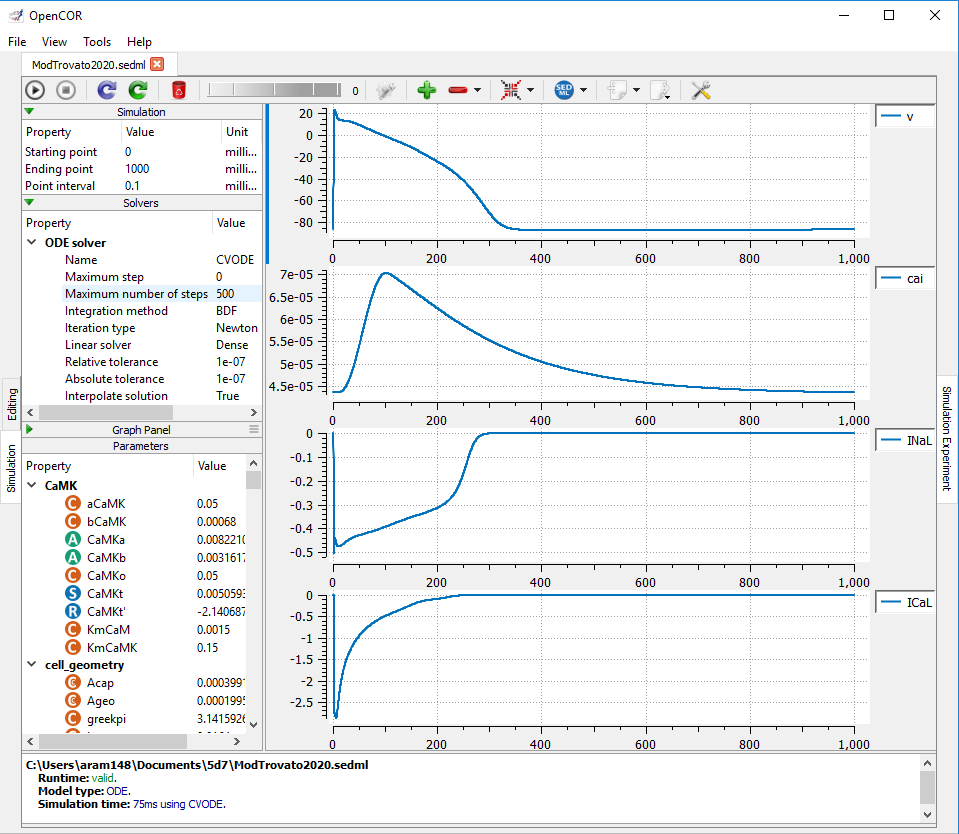

This is a sedml of C. Trovato, E. Passini, N. Nagy, et al., Human Purkinje in silico model enables mechanistic investigations into automaticity and pro-arrhythmic abnormalities, Journal of Molecular and Cellular Cardiology (2019), DOI: 10.1016/j.yjmcc.2020.04.001, please click the launch in OpenCOR link in the right-hand side menu to reproduce the results associated with Fig 5A of this model.
|  |
| Results produced by the SED-ML model with OpenCOR. |